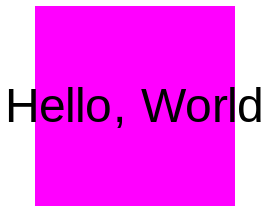
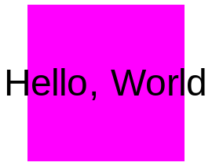
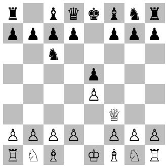

dtc
This is the documentation page for the programming languages used in the book Don’t Teach Coding.
These languages are used in various sections of the book, shown in green below:
1 Chapter 1: Prologues
Here we document the various "Hello, World!" languages from Chapter 1.
| #lang dtc/hello/normal | package: dtc |
Simply:
#lang dtc/hello/normal (print "Hello, World!")
The output of Stories like (print "Hello, World!") are intended to be compared with identical-looking stories written in different languages (see below). The point is to show by demonstration that syntax can remain constant while semantics differ from language to language.
| #lang dtc/hello/colors | package: dtc |
Simply:
#lang dtc/hello/colors (print "Hello, World!")
Gives you something a bit different every time:
 

| #lang dtc/hello/animation | package: dtc |
#lang dtc/hello/colors (print "Hello, World!")
That produces an animation describable with this Story:
2 Chapter 2: Beginnings
Here we document the various cat-related and Story-related languages from Chapter 2.
| #lang dtc/story/images | package: dtc |
This language has no specific vocabulary. In fact, any Story is valid.
Rules: Moments should be separated by an arrow (->). Separate Stories must go on separate lines.
This language simply compiles valid Stories to images. For example, this program will produce three images:
#lang dtc/story/images today -> I -> wrote -> "Hello, World" love -> conquers -> all history -> matters
Images can be saved to disk within DrRacket by right-clicking on them and selecting Save image...
Images can be embedded in a Story by placing the cursor where you want the image and clicking Insert > Insert Image ...
Exercise Can you produce this image?
| #lang dtc/story/cats | package: dtc |
A language with various vocabulary for producing and manipulating images of cats.
procedure
(cat) → void?

procedure
(meta-cat) → void?
procedure
(first-viral-cat) → void?
procedure
(edison-cat) → void?
procedure
(authors-cat) → void?
procedure
(rotate) → void?
#lang dtc/story/cats cat -> rotate
Gives:
In other languages, the same can be accomplished with a different syntax:
#lang dtc/story+/cats (rotate (cat))
procedure
(shrink) → void?
#lang dtc/story/cats cat
Gives:

#lang dtc/story/cats cat -> shrink
Gives:
#lang dtc/story+/cats (shrink (cat))
Is the same.
procedure
(grow) → void?
#lang dtc/story/cats cat
Gives
#lang dtc/story/cats cat -> grow
Gives:
procedure
(rotate-left) → void?

procedure
(redify) → void?
procedure
(blueify) → void?
procedure
(greenify) → void?
procedure
(orangeify) → void?
procedure
(purpleify) → void?
procedure
(yellowify) → void?
procedure
(meme-teacher) → void?
procedure
(dtc-cover) → void?

procedure
(dijkstra) → void?
procedure
(habermann) → void?
procedure
(notkin) → void?
procedure
(griswold) → void?
2.1 Bonus images
Some bonus images of Mesopotamian symbols. Higher numbers indicate later versions of that symbol. They can be treated like any other image. Example:
#lang dtc/complete (image `(,(redify (meso-star-1)) ,(orangeify (meso-star-2)) ,(yellowify (meso-star-3)) ,(greenify (meso-star-4))))
Produces the Story image of how the symbol for "star" grew more abstract over time:
procedure
(meso-star-1) → void?
procedure
(meso-star-2) → void?
procedure
(meso-star-3) → void?
procedure
(meso-star-4) → void?
procedure
(meso-sun-1) → void?
procedure
(meso-sun-2) → void?
procedure
(meso-sun-3) → void?
procedure
(meso-sun-4) → void?
procedure
(meso-rain-1) → void?
procedure
(meso-rain-2) → void?
procedure
(meso-rain-3) → void?
procedure
(meso-rain-4) → void?
procedure
(meso-fish-1) → void?
procedure
(meso-fish-2) → void?
procedure
(meso-fish-3) → void?
procedure
(meso-fish-4) → void?
3 Chapter 3: Middles
Here we document the various nestable Story languages from Chapter 3.
| #lang dtc/story+/images | package: dtc |
This is like #lang dtc/story/images except that it recognizes Stories written with the parenthesized syntax, rather than the Arrow syntax.
So instead of this...
#lang dtc/story/images today -> I -> wrote -> "Hello, World" love -> conquers -> all history -> matters
... you would write this ...
#lang dtc/story+/images (today I wrote "Hello, World") (love conquers all) (history matters)
By denoting the beginning and end of a Story with parentheses:
Stories become shorter because Arrows are unnecessary
Stories can be nested within other Stories
| #lang dtc/story+/cats | package: dtc |
Provides the same vocabulary as #lang dtc/story/cats (see various definitions above). But the grammar requires the parenthesized syntax instead of the Arrow syntax.
To ease the transition, though, many of the images above can be used flexibly – i.e. the following two programs are both valid and equivalent:
#lang dtc/story+/cats (cat rotate redify)
#lang dtc/story+/cats (redify (rotate (cat)))
Also note, although this is not mentioned in the book, this language is actually a super-set of the Racket language, meaning that you have access to all common functions (i.e. sqrt). You can also import other Racket libraries. For example, using (require 2htdp/image) can be used to bring in more image-related vocabulary words (as documented by the 2htdp library]):
#lang dtc/story+/cats (require 2htdp/image) (scale 2 (overlay (redify (rotate 15 (dijkstra))) (circle 100 'solid 'black)))
This is so that students who go on to read How To Design Programs can return and creatively reengage with the content of "Don’t Teach Coding".
Vocabulary words that overlap (like rotate) will be overwritten by the required library. So you must adhere to the grammatical rules documented by that library (i.e. putting the rotation angle in the first position of a (rotate ...) expression.
| #lang dtc/frames/cats | package: dtc |
Same as #lang dtc/story+/cats (see above) but adds vocabularly related to nested Stories.
A simple example would be
#lang dtc/frames/animations (image '(this is a story))
Giving:

The provided Story may contain nested Stories, in which case, the sub-Stories are rendered in a nested part of the resulting image.
#lang dtc/frames/animations (image `(this `(is a story)))
Gives:
And:
#lang dtc/frames/animations (image `(this `(is `(a story))))
Gives:
The top-most (framing) Story is always render in black. A quoted story is rendered in gray.
Escaping from a gray story, causes the escaped story to render in black:
#lang dtc/frames/animations (image `(this `(is ,(a story))))
Gives:
The gray dot is a visual representation of the quotation mark, high on the line. The black dot is the visual representation of the comma, low on the line.
Finally, note that you have access to all of Racket, so there are many valid things you can do with Stories before they are handled by image.
#lang dtc/frames/animations (image (shuffle '(this is a story)))
And:
#lang dtc/frames/animations (image (reverse '(this is a story)))
Giving:
procedure
n : number? = #f
If not given a number, napoleon/turk returns a Story whose moments are the images in the game.
For example, the full game can be animated to completion with:
#lang dtc/frames/animations (animate (napoleon/turk))
procedure
n : number?
The following two programs are equivalent
#lang dtc/frames/animations (napoleon/turk 4)
#lang dtc/frames/animations (image-chess (napoleon/turk-raw 4))
Both give:

An underscore '_ – indicating an empty square.
A lowercase letter indicating a white piece.
An uppercase letter indicating a black piece.
Valid letters are 'K (for King), 'Q (for Queen), 'B (for Bishop), 'N (for Knight), 'R (for Rook), and 'P (for Pawn).
#lang dtc/frames/animations (image-tic-tac-toe `(_ _ _ _ X _ _ O _))
Gives:
Note that other moments are accepted too. For example, games of red cats vs blue Dijkstras may be generated as follows:
#lang dtc/frames/animations (define X (redify (cat))) (define O (bluify (dijkstra))) (image-tic-tac-toe `(_ _ _ _ ,X _ _ ,O _))
4 Chapter 4: Ends
Here we document the various nestable Story languages from Chapter 4.
| #lang dtc/complete | package: dtc |
This language has everthing in it that Racket does, and more. We won’t document everything from Racket here – only the vocabulary that’s directly used in Don’t Teach Coding.
syntax
(define word def)
#lang dtc/complete (define hello "Hello, everybody!")
From that point forward hello can be used without errors. It’s meaning has been given.
syntax
(define (word slot ...) def)
#lang dtc/complete (define (hello ___) (~a "Hello, " ___ "!"))
From that point forward hello can be used, as long as it matches the pattern (hello _). For example, (hello "World") or (hello (hello "World")).
syntax
(if condition true-branch false-branch)
For example:
#lang dtc/complete (if (eq? 'tuesday (current-day)) (print "Cook tacos") (print "Cook the usual"))
This program will behave differently on Tuesdays because the (if ...) expression behaves differently on Tuesdays.
syntax
(cond [if then] ... [else __])
#lang dtc/complete (cond [(eq? 'monday (current-day)) (print "Cook burgers")] [(eq? 'tuesday (current-day)) (print "Cook tacos")] [else (print "Cook the usual")])
Note that there are many ways to do conditional branching. Racket for example, has a construct called match which can express the above idea in an even more syntactically clear way
#lang dtc/complete (match (current-day) ['monday (print "Cook burgers")] ['tuesday (print "Cook tacos")] [else (print "Cook the usual")])
We mention it here to remind you that there’s an entire world of linguistic discovery to be had beyond the pages of these docs...
procedure
s : string?
#lang dtc/complete (define number-of-people 5) (define number-of-plates (* 2 number-of-people)) (define number-of-cups (* 3 number-of-people)) (define bags-of-chips (/ number-of-people 3)) (define bottles-of-soda (/ number-of-people 4)) (~a "Buy:\n" number-of-plates " plates \n" number-of-cups " cups \n" bottles-of-soda " bottles \n" bags-of-chips " chips \n"))
procedure
(eq? x y) → image?
x : any/c y : any/c
Something that is the same today might not be the same tomorrow.
We’ll now document the things that dtc/complete adds to Racket.
#lang dtc/complete (define number-of-people (cond [(eq? 'monday (current-day)) 5] [(eq? 'tuesday (current-day)) 9] [(eq? 'thursday (current-day)) 12] [(eq? 'friday (current-day)) 17] [else 0])) (if (> number-of-people 10) (print "Bring extra chairs") (print "Bring the usual stuff"))
#lang dtc/complete (image-code `(animate `(cat ,(cat))))
This gives you:
Remember that once something is an image, other vocabulary that pertains to images becomes relevant:
#lang dtc/complete (rotate (image-code `(animate `(cat ,(cat)))))
#lang dtc/complete (define class-members '(alice bob jimmy susan marco )) (define random-person (first (shuffle class-members))) (~a "The winner is..." random-person))
This program will pick a random class member.
The animate-deck word displays each front until you press a key. Then it will display the back. Then it will go to the next card. And so on, until all the cards are shown, at which point it loops back to the beginning.
Here’s a program for animating a small deck of two flashcards.
#lang dtc/complete (animate-deck `((cat ,(cat)) (first-viral-cat ,(first-viral-cat))))
#lang dtc/complete (define dtc-trivia-deck `(("Year of first program comprehension fMRI study?" "2014") ("American Sign Language shares what \"modality\" or \"channel\" with computer languages?" "The visual-spatial modality, or channel") ("The oldest known story-within-a-story dates back to?" "Ancient Egypt (18th to 16th century BC). King Cheops' 5 sons tell 5 stories about magic and miracles.") ("Both the backslash and the backtick serve a similar abstract purpose. What is it?" "To \"escape\" the thing that comes after it. The backslash precedes a literal quote or a literal backslash. The backtick precedes a literal (uninterpreted) story.") ("Programming comprehension, understanding American Sign Language, and reading English have all been shown to activate which part of the brain?" "Broca's area.") ("In a Story that describes a flashcard, how many Moments are there?" 2) ("In a Story that describes a tic-tac-toe board, how many Moments are there?" 9) ("In a Story that describes a deck of cards, how many Moments are there?" "It depends. As many as there are cards in the deck.") ("In a Story that describes a game of chess, how many Moments are there?" "It depends. As many as there are moves in the game.") ("In a Story that describes a game of tic-tac-toe, how many Moments are there?" "It depends. As many as there are moves in the game. But no more than 9.") ("Write a simple program that animates through a deck with two cards, both of which have pictures of cats on the back." (image-code `(animate-deck `("What does the first viral cat on the internet look like?" ,(first-viral-cat)) `("What does the oldest photo of a cat look like?" ,(cat))))) ("Write a simple program that animates through the numbers from 1 to 10." (image-code `(animate `(1 2 3 4 5 6 7 8 9 10)))) ("Write a simple program that shows a picture of a Story whose three moments are three images of cats." (image-code `(image `(,(cat) ,(edison-cat) ,(first-viral-cat))))) ("Write a Story that shows a picture of a flashcard that has a picture of a chessboard on the back." (image-code `(image `("What does the starting state of a chessboard look like?" ,(napoleon/turk 1))))))) (animate-deck dtc-trivia-deck)